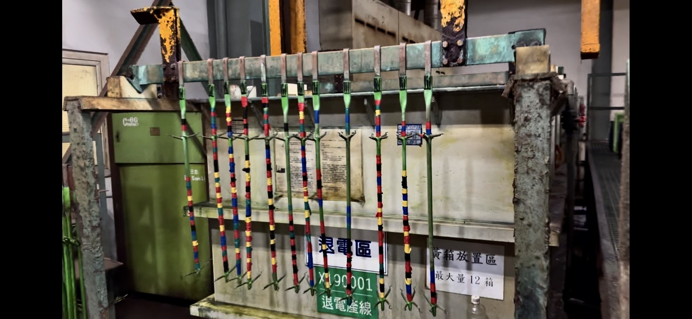
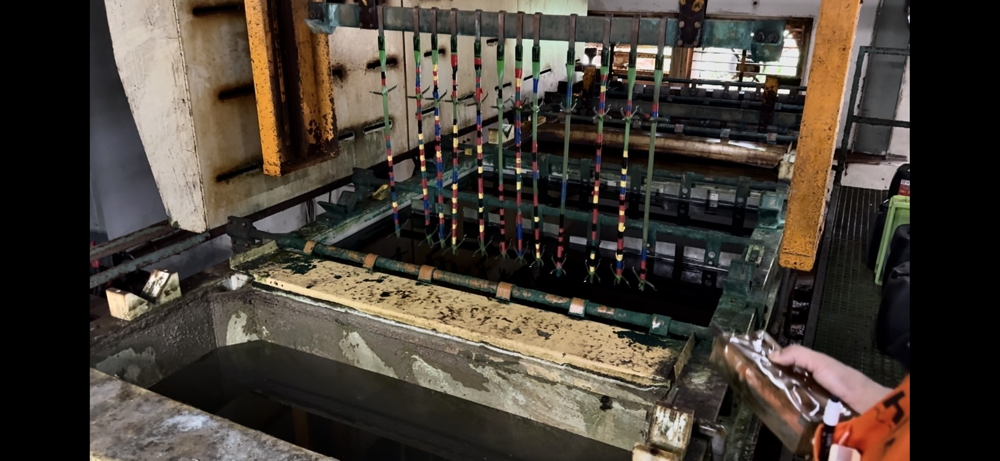
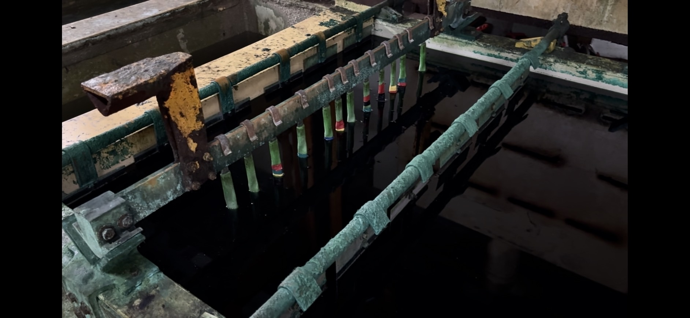
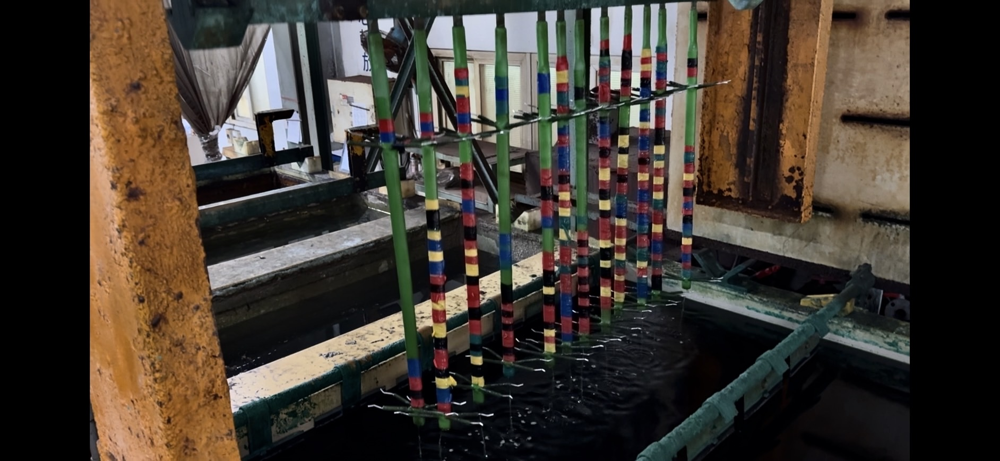
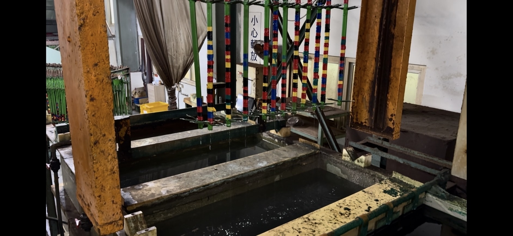
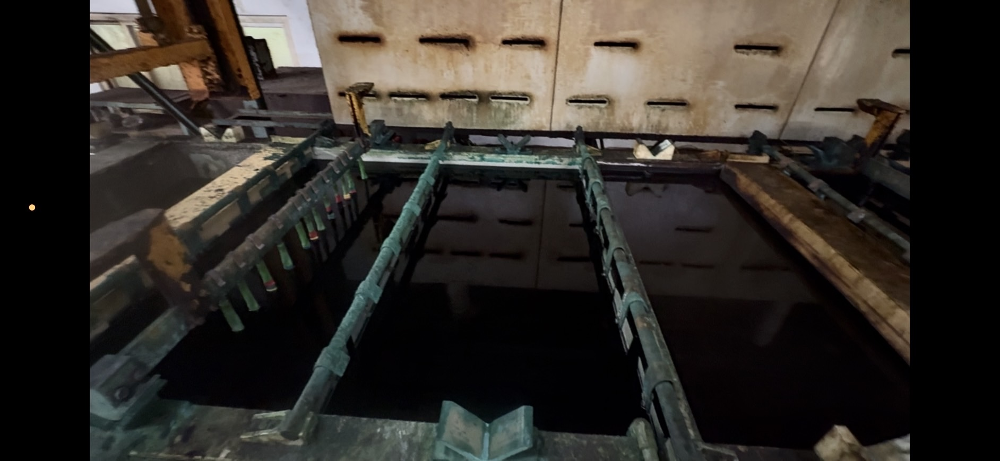

電解快速剝鍍示意圖
寬 800–1200px
電解式快速剝鍍
透過電解作用加速掛具表面金屬鍍層剝離，降低傳統清理方式所需時間，使掛具能更快恢復使用。
關於產品
NPRE-3 電解式掛具剝離劑，專為不鏽鋼線及鈦線掛具設計，適用於 PCB 與一般電鍍產業。透過電解作用快速去除掛具表面的銅、鎳等金屬鍍層，縮短掛具清理時間，提升掛具周轉與再利用效率，並可配合既有電鍍產線設備進行導入。
NPRE-3 已應用於實際電鍍產線掛具剝鍍作業，可配合現場吊掛系統及電解設備進行批次處理。不同工廠的掛具數量、鍍層厚度及設備規格不同，實際電流與處理時間可依現場條件進行調整。
主要特點
以電解方式快速去除掛具表面金屬鍍層，提升掛具周轉與再利用效率。
透過電解作用加速掛具表面金屬鍍層剝離，降低傳統清理方式所需時間，使掛具能更快恢復使用。
可配合電鍍廠既有吊掛系統、電解槽及整流設備進行掛具批次處理，無需大幅更動現有產線配置。
剝離過程產生的金屬沉積物可集中收集，交由專業回收業者進行金屬資源回收，兼顧產線效率與資源再利用。
技術規格
可配合電鍍廠既有吊掛系統、電解槽及整流設備進行掛具批次處理，電解液於正常操作下可循環使用。
使用情境
特別適用於不鏽鋼線及鈦線掛具的鍍層剝離作業。
作業流程
從掛具置放到槽液維護，可配合現場吊掛系統與電解設備進行批次處理。
以 2000 kg 建浴為例，加入 1000 kg NPRE-3 與 1000 kg 水， 完成建浴後添加約 3% 硝酸，並依實際 pH 值調整。
處理對象為不鏽鋼線及鈦線掛具。掛具置放完成後， 操作吊具機將整排掛具拉入剝離槽。

陰極連接不鏽鋼極板，陽極連接待處理掛具。本案例操作電壓設定於 8–10V。 建浴後 pH 約為 1–2，正常操作後 pH 會逐漸升高，以硝酸調整至 1.5–2.5。 實際操作時間依掛具數量、鍍層厚度及電流狀況調整。


剝離完畢後，操作吊具機將掛具拉入隔壁清洗槽浸泡即可， 再拉起回原位置入新的待剝離掛具，形成連續作業循環。
剝離時間約為電鍍時間的 1/10



液位下降時，以藥水與水 1:1 的比例補充。 槽底淤泥累積至影響掛具作業時，即進行清槽。

以上為特定客戶實際操作案例之條件。實際電壓、電流與操作時間會因掛具材質、 鍍層種類與厚度、掛具數量及槽體設備規格而有所不同，建議導入前先進行小批試作。
注意事項
常見問題
以下整理產線導入時最常被問到的操作條件與適用範圍。
NPRE-3 適用於一般電鍍工廠及 PCB 相關產業之掛具鍍層剝離，特別適用於不鏽鋼線及鈦線掛具，可去除銅、鎳等金屬鍍層，並可配合 PCB 製程掛具、PCB 電鍍線與一般電鍍產線使用。
實際客戶操作案例中，在 8V、約 150–200A 條件下，掛具約 10 分鐘完成鍍層剝離。實際剝離時間會依鍍層種類、厚度、掛具數量、電流及操作條件而有所不同，可依現場條件調整。
以 2000 kg 建浴量為例：加入 1000 kg NPRE-3 掛具剝離劑，再加入 1000 kg 水。完成建浴後添加約 3% 硝酸，建浴後 pH 約為 1–2。正常操作後 pH 會逐漸升高，請以硝酸調整至 1.5–2.5。
可以。正常操作下電解液可循環使用，請依實際 pH、液位及消耗狀況進行補充與維護。若剝離速度降低，應確認 pH、電流及藥液狀態。
電解剝離後產生的金屬沉積物可集中收集，並交由專業回收業者進行後續金屬資源回收。廢液及沉積物應依所在地法規及工廠既有廢水／廢棄物處理程序處理。
聯絡我們
宏百行 HONG BAI HUAGONG COMPANY